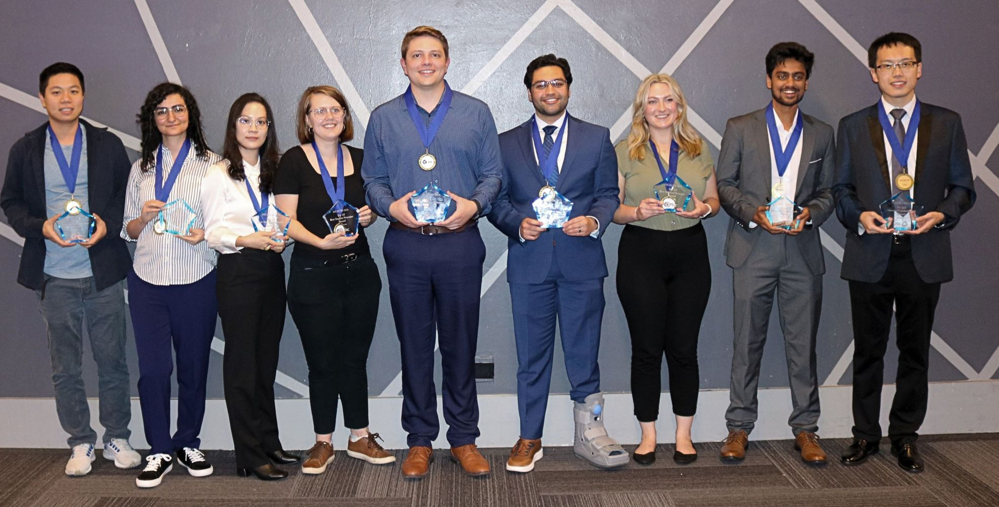

SRC TECHCON, the flagship conference of the Semiconductor Research Corporation (SRC) founded in 1982, has evolved from a platform to showcase SRC-funded university research into a pivotal annual event held in Austin, Texas, fostering collaboration between academia and industry, highlighting student-led innovations in microelectronics, and serving as a major recruiting hub through its CareerConnections component. With a rigorous 30% acceptance rate for student presentations, a growing focus on diversity (over 50% participation from women and underrepresented minorities in 2024), and an expanding scope covering topics like AI-driven design and sustainable computing, TECHCON remains a vital nexus for advancing semiconductor research and cultivating the next generation of industry talent.

Jianheng Luo (UC Berkeley), Sanaz Sadeghi (Cornell Univ.), Aijia Yao (MIT), Katie Neilson (Stanford Univ.), Alex Dinkelacker (UC Santa Barbara), Bilal Azhar (Cornell Univ.), Emma Pawliczak (Binghamton SUNY), Soumya Mahapatra (Univ. of Southern California), Zishen Wan (Georgia Tech). Not pictured: Mohammad Rafiee Diznab (Dalhousie Univ.)
Mission
The mission of TECHCON is to accelerate semiconductor innovation by fostering collaboration between academia, industry, and government, while showcasing breakthrough research and developing the next generation of technical leaders.
Past Speakers
Past TECHCON speakers have included industry leaders, government officials, and academic pioneers such as Natcast CEO Deirdre Hanford, NIST Director Dr. Laurie Locascio, and Intel VP Dr. Michael Mayberry, all sharing insights on semiconductor innovation, policy, and emerging technologies.
Ajit Manocha; Former CEO of GLOBALFOUNDRIES
Deirdre Hanford, CEO of Natcast
Jeff Dunn, College Relations Manager, Intel